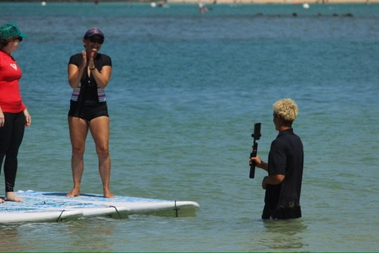

Digital Studio
← HomeʻIwa Media
A Honolulu digital studio I co-founded to build software, run growth, and make media for small businesses.
What we do
A Honolulu digital studio for small businesses, with three service lines. Software: web apps, automations, and the data behind them. Growth: paid social and the tracking that proves it worked. Media: the content that feeds both. Most clients need more than one, because a system nobody finds and traffic that lands nowhere fail the same way.

My role
- Ran discovery and outreach: scoped engagements, pitched owners directly, and reported results against their numbers.
- Built and shipped the software work end to end, from process mapping to deployment.
- Set up the studio itself: website, Google Workspace, Meta Business Suite, pricing, positioning, and pitch materials.
Who we worked with
Businesses across lending, tourism, hospitality, home services, and food and beverage, including FLS Capital Advisors, Bogger Builds, Waikiki Sport Fishing, and Yoga Floats.
Selected work
- Loan Origination Platform, plus a full rebrand for FLS Capital Advisors
- Paid Social Campaigns for Yoga Floats and Bogger Builds: 3,873 link clicks at $0.35 average